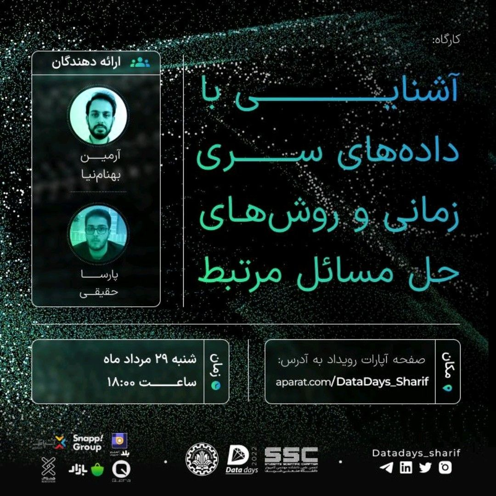

The Datadays 2022 AI competition (link), held at Sharif University of Technology's Computer Engineering Department, gathered over 2000 participants to tackle the primary challenge of anomaly detection in time series data. This highly anticipated event provided a platform for data scientists, AI enthusiasts, and participants from various backgrounds to showcase their skills and innovative solutions. The competition aimed to advance the field of anomaly detection by encouraging participants to develop cutting-edge algorithms and methodologies for identifying anomalies within complex time series datasets.
In conjunction with the competition, a dedicated Time Series Workshop was conducted, led by myself and Armin Behamnia, members of the science group. This workshop focused on providing attendees with a deep understanding of time series analysis techniques, independent of the competition's main topic of anomaly detection. Through informative lectures, practical exercises, and real-world case studies, participants had the opportunity to explore various aspects of time series data analysis. The workshop aimed to equip attendees with valuable insights and practical skills to effectively analyze and interpret time series data, enabling them to make informed decisions and derive meaningful insights from such datasets.
Poster of the Workshop